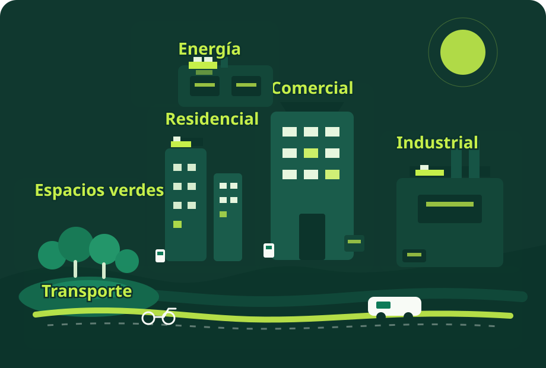

01
Ajustá una decisión
Espacios verdes, energía, movilidad o materiales. Los controles parten de la ciudad completa.
Sostenibilidad urbana
VS EcoShift es un simulador educativo. Cambiá políticas de una ciudad imaginaria, mirá cómo se actualiza el mapa y leé indicadores, gráficos, desafíos y resultados. Esas lecturas no son mediciones ambientales reales.

El recorrido
En el simulador, la ciudad, los controles y las lecturas comparten la misma pantalla. Cada movimiento recalcula el conjunto, no un indicador aislado.
01
Espacios verdes, energía, movilidad o materiales. Los controles parten de la ciudad completa.
02
La representación acompaña el cálculo: parques, paneles, bicicletas y el pulso de las zonas.
03
Una mejora puede convivir con un retroceso. El transporte eléctrico, por ejemplo, alivia emisiones y suma consumo.
Qué podés explorar
El motor recalcula emisiones, aire, consumo, energía renovable, superficie verde, movilidad y reciclaje cada vez que cambia una variable. Los gráficos y el puntaje educativo salen del mismo cálculo.
Espacios verdes para la superficie de la ciudad y el aire que la rodea.
Paneles solares y eficiencia. El transporte eléctrico puede empujar el consumo hacia arriba.
Flota eléctrica y bicicletas. Las dos participan; ninguna reemplaza sola a todo el transporte.
Gestión de residuos y reciclaje. Hace falta el sistema de recolección y la separación.
Más allá del simulador
Podés guardar hasta ocho escenarios propios en este navegador, compararlos, seguir cuatro metas educativas y consultar el resultado del borrador o de un escenario guardado.
Desafíos
El cumplimiento se evalúa con los valores completos del motor, no con el redondeo de la pantalla. En el simulador y en Desafíos ves cuáles están cumplidos y cuáles pendientes.
Respecto del valor inicial de Ciudad actual, no de una cifra redondeada en pantalla.
02El umbral es el valor completo del indicador.
03Son puntos del indicador, no un porcentaje relativo.
04Eléctrico y bicicleta se leen juntos.